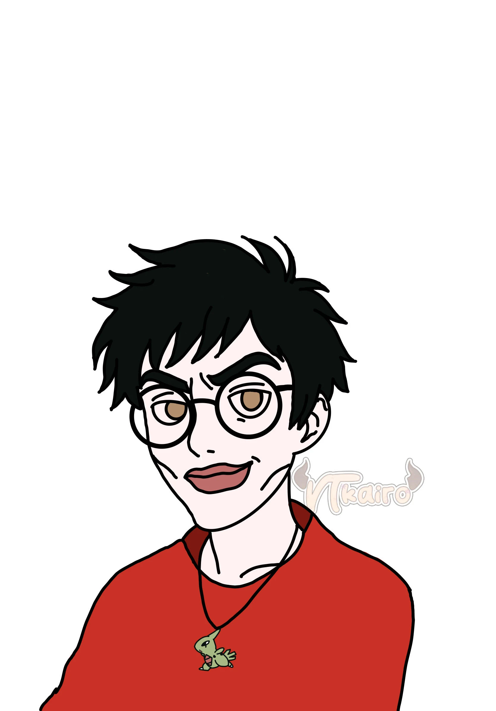
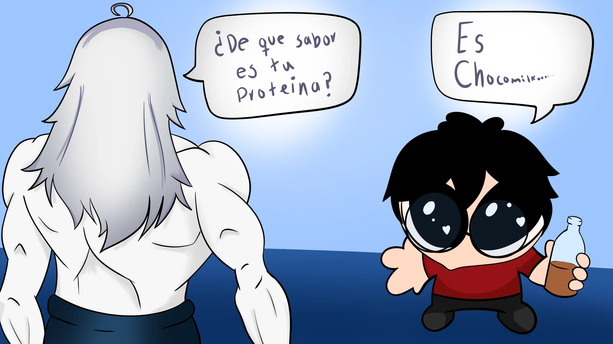
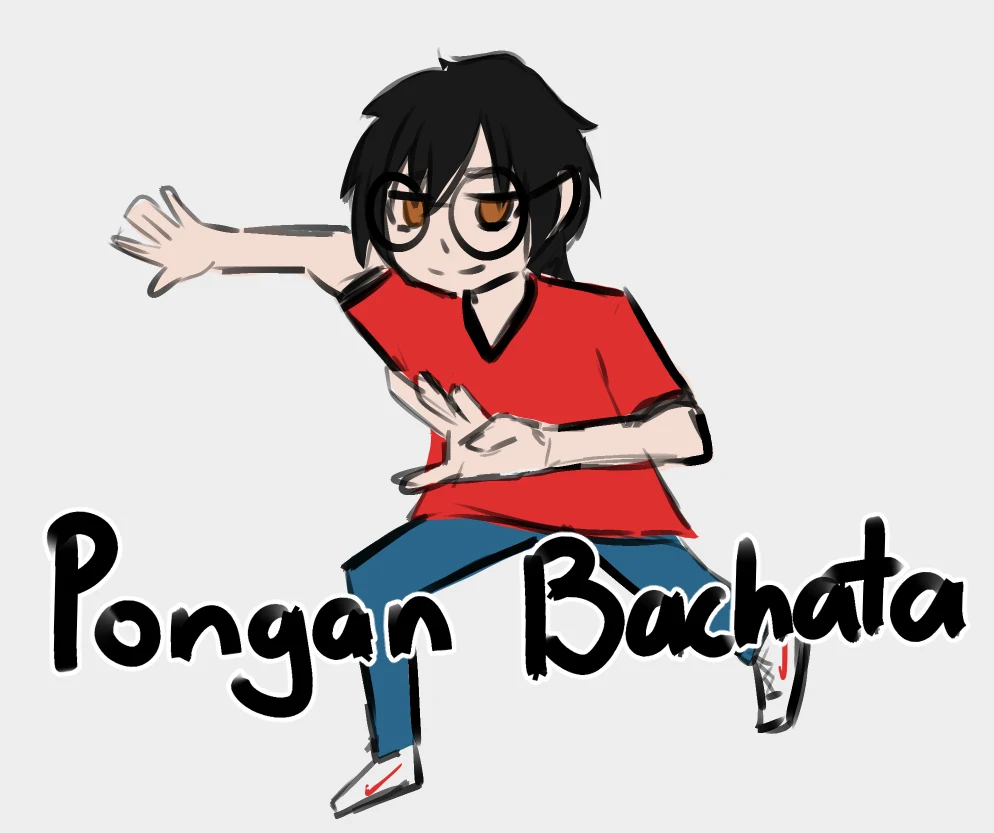

01 / VTuber · Twitch · Comunidad
Un pequeño universo, una gran comunidad.
WewinVT es el espacio donde viven los streams, los fanarts, los emotes y los recuerdos del canal. Un lugar hecho por y para la comunidad: entra, mira y acompáñanos.
02 / Quién es Wewin
Lentes, playera roja y mucho chocolate.
Soy Wewin: VTuber, fan de las cosas dulces y del Monster blanco, y alguien que (aunque no lo creas) también toca pasto. En stream hay shooters, RPGs, bachata y canto, aunque no sepa cantar. Aquí jugamos lo que nos apetece, no lo que dicte el algoritmo.
- Shooters y RPGs
- Cosas dulces y Monster blanco
- Bachata y karaoke sin talento
- Una comunidad que no es demasiado rara
Overlays y emotes por @shinyvibes_art · Emotes por @VtKairo
03 / Archivo de comunidad
Fanarts y momentos del canal.
Ilustraciones hechas por la comunidad y emotes del canal, reunidos con sus créditos.



05 / Comunidad
Dónde encontrar al Wewin.
Toda la actividad del canal pasa por aquí: directos, clips, comunidad y anuncios. Síguenos donde más te acomode.
06 / Apoyo
Financia decisiones cuestionables.
Todo apoyo es voluntario: con estar aquí ya ayudas muchísimo. Pero si te sobra un poquito, aquí están el cafecito y las cartas mágicas.
100% del apoyo se invierte en nervios, trotes y cosas raras dentro del stream. ✨